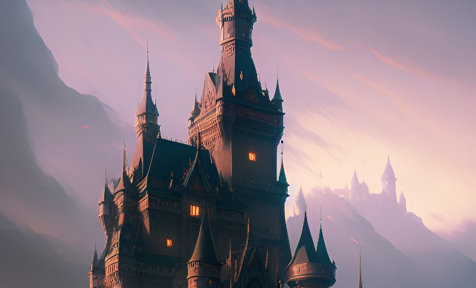

|  | Antes de que la magia desapareciera de todo mundo conocido, fluía a través de todas las criaturas vivas y unos pocos elegidos podían dominarla y ser capaces de crear lo mejor y lo peor. Jan Lin es una de ellas, la esencia del fuego corre por sus venas, pero una plaga de origen desconocido amenaza con acabar todo aquello que aprecia. Jan Lin es una joven y talentosa aprendiz de maga que vive en una pequeña aldea al borde del bosque. Su mentor, el anciano mago Hanzo, le ha enseñado todo lo que sabe sobre el manejo de la magia del fuego, pero ella siente que aún le queda mucho por aprender. Sin embargo, su vida da un giro inesperado cuando una extraña enfermedad comienza a afectar a los habitantes de su aldea. Por su cuenta, decide investigar la causa de la plaga y descubre que una misteriosa criatura está detrás de ella. Este ser, conocido como el Devorador de Mundos, se alimenta de la energía que fluye a través de los seres vivos y ha estado creciendo en poder y tamaño gracias a la magia que ha consumido. La joven presiente que debe detenerlo antes de que sea demasiado tarde, pero para hacerlo necesitará algo más que su habilidad con la magia del fuego. |
|
En su búsqueda de una solución, se encontrará con otros magos y aprendices que también están luchando contra la plaga y se une a ellos en una peligrosa aventura. Juntos, enfrentarán a criaturas mágicas poderosas y descubrirán secretos que han estado ocultos por mucho tiempo. La tercera entrega de la saga bestseller no es su continuación, sino la precuela de la historia que ha cautivado a millones de lectores y que ha sido traudcida a más de 15 idiomas. El autor ha reconocido que esta historia se le ocurrió hace 4 años, cuando comenzó a jugar la versión coreana del videojuego RPG MMO Lost Ark, y aunque ambas historias no tengan a simple vista nada que ver, ambas tienen un aire de epicidad que hace que los fans se queden con ganas de más. Puedes ver un resumen que compara la historia del videojuego con la de esta nueva obra coral del escritor. |
Inspiración |
|
|